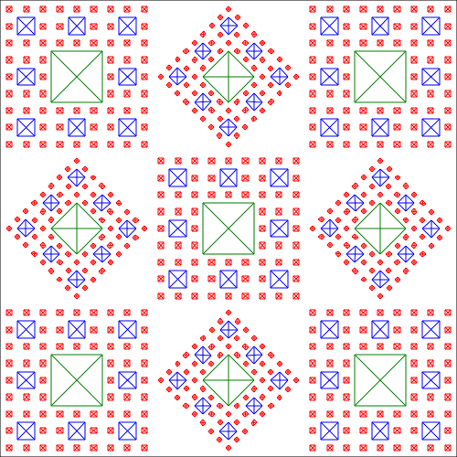

265Draw: Sierpinski Carpet
Drawing
- Sierpinski Carpet With Four Levels of Recursion:
- Tiled Sierpinski Carpets With Two Levels of Recursion:

Code:
Usage
Script to generate Sierpinski Carpets
Create a Recursive Sierpinski Carpet with 2 Levels
Scale carpet lines file down to fit in central third of canvas
python rotate_scale_translate.py -f .3333 < carpet_2.txt > carpet_2S.txt
Build some tile patterns from scaled file
python transform_carpet.py pattern < carpet_2S.txt > carpet_2ST.txt
- Where pattern is one of: cross, diagonal, rotation.
Bugs
- Slow screen drawing when recursion level higher than 4.
- Clunky code.
References
Document Notes
Last Update: 2017 March 23 at 11:30:17 PDT
|